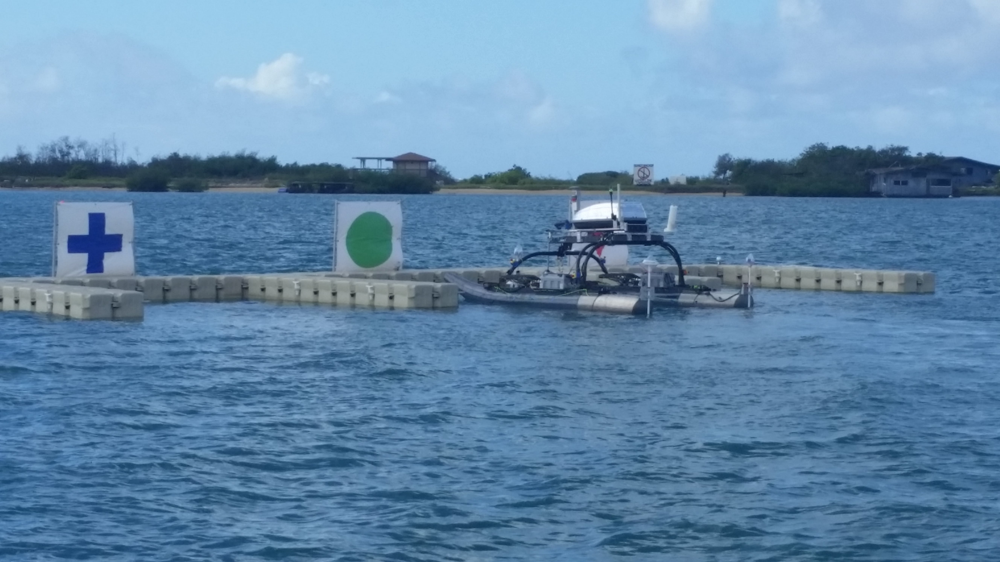
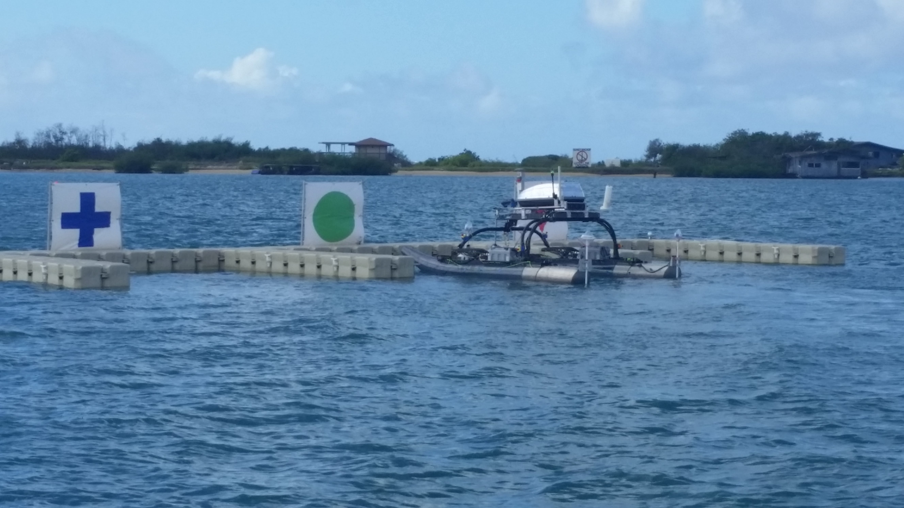
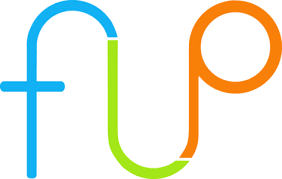

Experience.
-
City of Gainesville.
Data Visualization Fellow
AUGUST 2022 - PRESENT
I will be starting a part-time, project-based fellowship with the City of Gainesville's Strategic Initiatives Department in August of 2022. I was selected to fill the role of a Data Visualization Fellow.
Read More What I Do:
I help the City create, design, and refine data visualizations that communicate trends. In the process, I make data automations, create real-time interactive dashboards, and assess data quality.
Skills Involved:
·HTML, CSS, and JavaScript
·Tableau
·SQL
·Database Manipulation
·GIS applications
·Data Quality Analysis
·Graphic Design
What's Next:
I will begin my fellowship this Fall and will update this website as I complete projects.
What I Do:
I help the City create, design, and refine data visualizations that communicate trends. In the process, I make data automations, create real-time interactive dashboards, and assess data quality.
Skills Involved:
·HTML, CSS, and JavaScript
·Tableau
·SQL
·Database Manipulation
·GIS applications
·Data Quality Analysis
·Graphic Design
What's Next:
I will begin my fellowship this Fall and will update this website as I complete projects.
-
Engineering Good.
App Developer Intern
JUNE 2022 - AUGUST 2022
This summer, I will be participating in an internship with Engineering Good, a non-profit based in Singapore. I will be working at their office in Singapore on a Missing Persons App for Persons with Down Syndrome. What I Do: I will be working on refining and testing Engineering Good's two solutions to help locate missing persons with Down syndrome (PwDs): Mangoly and Rojakly. By the end of this internship, I will have a completed, user-tested prototype of Mangoly and Rojakly. Mangoly: An application which utilizes Google Maps API and Telegram's bot feature to provide a one-click, easy cosolidated location view of the concealed identities of PwDs Rojakly: A small device that can be slipped inside any lanyard. It quickly alerts caregivers or teachers when the wearer leaves the premises. Context: I have the honor to travel to Singapore and work in-person thanks to the UF in Singapore Program. Engineering Good is a non-profit with a mission to power inclusivity for the disadvantaged through sustainable engineering and technology solutions. Skills Involved: ·App Development ·Electronics ·3D Printing ·User Testing What's Next: I will begin my fellowship this June and will update this website as I complete internship.
Read More -
Machine Intelligence Lab.
Undergraduate Researcher & Software Team Member
JANUARY 2022 - JUNE 2022
I helped conduct undergraduate research with the Machine Intelligence Lab (MIL) at UF during the Spring 2022 semester. I was a member of the software team and worked with a group of developers to program an autonomous robot. What I Did: As a member of the software team, I mainly helped prepare MIL's autonomous robot, the NaviGator, for a fully-simulated robotics competition, VRX. Though this specific competition was simulated, the NaviGator is a physical robot that is also entered into other non-simulated competitions. The Beginning of the Semester For about the first month of the semester, I worked mostly on setting up the MIL repository and installing the necessary software. I found the onboarding process rather challenging because of how new everything was to me. I also had a M1 Mac laptop, which was incompatible with almost every tool that MIL used. In retrospect, working through the onboarding process on an M1 helped teach me how to troubleshoot issues by myself. I was able to put a lot of skills I learned in my classes to use. For example, we learned about the theory behind Git and version control, but now that I actually had to use to develop with others, I became much more familiar with it. In the process, I also learned the standard protocol of how to accept, work on, and publish solutions to the tasks I was given. The operating system that MIL used was Ubuntu, a distribution of Linux. During the beginning of the semester, I also had to get acquainted with Linux.
Read More The Middle of the Semester
Throughout the semester, I attended weekly software team meetings, where we discussed our tasks, progress, and next steps. I found these meetings alone very helpful in showing me the development process.
Once I completed the onboarding, I was assigned my first task: I had to make a script to switch between development branches that automated other tasks that must also be completed before and after switching branches.
Before this point, I rarely had to use the terminal, so making terminal scripts was foreign to me. I did not even know what the term "bash" meant. I had to do a lot of research beforehand before I even had an idea about how I should go about solving my task.
One unexpected issue I came across was how difficult it was to keep my Git branches and commits organized, especially as a new Git user. I had to develop my scripts on one branch, but any time I ran or tested my scripts, I would be switched to another branch. To solve this, I had to do some additional research about the intricacies of Git branches.
Once I understood Git, I then had to work on automating the other miscellaneous tasks that I had to incorporate into my script. For example, I had to update submodules, recompile the code, remove certain files and directories each time a branch was switched, and change the contents of certain files in the repository to prevent errors.
Though the resulting script was rather simple, the process I went through to learn the topics necessary to write such a script was not. I eventually completed the script, learned how to push the remote repository, and got my merge request approved (after a few attempts).
The End of the Semester
My remaining few tasks I had to complete involved making world files that the NaviGator could be tested on. To do this, however, I would first need to learn and install the Robot Operating System (ROS). ROS is a framework used to develop robot software. To learn it, I worked through the ROS tutorials in ROS's documentation.
These world files are written in XML and simulated using Gazebo. In them, I can control various attributes of the world, such as light, objects, and terrain. For each of these world files, I changed these parameters so the NaviGator could be tested in different conditions. By the end of the semester, I created about 10 different world files, with each one aimed at testing the environmental conditions of specific tasks that the NaviGator will have to complete in the competition.

What I Learned:
In addition to all the technical skills I gained, I also came to the important realization that robotics aren't for me. However, I also found myself coming out of this experience with much more insight into how the development process works, something that will prove useful in other fields of computer science. As much as I enjoyed my time with MIL, I will likely be exploring other computer science fields in future semesters.
Skills Involved:
·Python and C++
·Git
·The Development Process
·Ubuntu (Linux)
·ROS
·Bash Automations
The Middle of the Semester
Throughout the semester, I attended weekly software team meetings, where we discussed our tasks, progress, and next steps. I found these meetings alone very helpful in showing me the development process.
Once I completed the onboarding, I was assigned my first task: I had to make a script to switch between development branches that automated other tasks that must also be completed before and after switching branches.
Before this point, I rarely had to use the terminal, so making terminal scripts was foreign to me. I did not even know what the term "bash" meant. I had to do a lot of research beforehand before I even had an idea about how I should go about solving my task.
One unexpected issue I came across was how difficult it was to keep my Git branches and commits organized, especially as a new Git user. I had to develop my scripts on one branch, but any time I ran or tested my scripts, I would be switched to another branch. To solve this, I had to do some additional research about the intricacies of Git branches.
Once I understood Git, I then had to work on automating the other miscellaneous tasks that I had to incorporate into my script. For example, I had to update submodules, recompile the code, remove certain files and directories each time a branch was switched, and change the contents of certain files in the repository to prevent errors.
Though the resulting script was rather simple, the process I went through to learn the topics necessary to write such a script was not. I eventually completed the script, learned how to push the remote repository, and got my merge request approved (after a few attempts).
The End of the Semester
My remaining few tasks I had to complete involved making world files that the NaviGator could be tested on. To do this, however, I would first need to learn and install the Robot Operating System (ROS). ROS is a framework used to develop robot software. To learn it, I worked through the ROS tutorials in ROS's documentation.
These world files are written in XML and simulated using Gazebo. In them, I can control various attributes of the world, such as light, objects, and terrain. For each of these world files, I changed these parameters so the NaviGator could be tested in different conditions. By the end of the semester, I created about 10 different world files, with each one aimed at testing the environmental conditions of specific tasks that the NaviGator will have to complete in the competition.

What I Learned:
In addition to all the technical skills I gained, I also came to the important realization that robotics aren't for me. However, I also found myself coming out of this experience with much more insight into how the development process works, something that will prove useful in other fields of computer science. As much as I enjoyed my time with MIL, I will likely be exploring other computer science fields in future semesters.
Skills Involved:
·Python and C++
·Git
·The Development Process
·Ubuntu (Linux)
·ROS
·Bash Automations
-
Japanese Student Association.
Web Developer
FEBRUARY 2022 - PRESENT
I am currently working on developing a website for UF's new Japanese Student Association (JSA) from scratch using HTML, CSS, and JavaScript. I have a "Projects" page dedicated to the website that you can find here: Skills Involved: ·HTML, CSS, and JavaScript ·Web Development ·Graphic Design ·UX
Read More -
Society of Asian Scientists and Engineers.
SASE Intern
JANUARY 2022 - APRIL 2022
I am a member of UF's Society of Asian Scientists and Engineers (SASE) chapter. During my spring semester of 2022, I was a member of SASE Interns, a small group within SASE that helped the executive board organize events.
Read More What I Did:
As a SASE Intern, I helped SASE Board plan general body meetings, events, and fundraisers. I worked on a team of other SASE Interns and helped with event logistics.
One of the big events my team within SASE Interns helped organize was an egg tart fundraiser. Collaboratively, we brainstormed the best way to fundraise for SASE, how we should advertise and promote the fundraiser, how we will sell the egg tarts, how we will make the egg tarts, and other related logistics. Our fundraiser was a success and we were able to sell about 120 egg tarts.
Skills Involved:
·Leadership
·Event Planning
·Logistics
·Teamwork and Communication
What I Did:
As a SASE Intern, I helped SASE Board plan general body meetings, events, and fundraisers. I worked on a team of other SASE Interns and helped with event logistics.
One of the big events my team within SASE Interns helped organize was an egg tart fundraiser. Collaboratively, we brainstormed the best way to fundraise for SASE, how we should advertise and promote the fundraiser, how we will sell the egg tarts, how we will make the egg tarts, and other related logistics. Our fundraiser was a success and we were able to sell about 120 egg tarts.
Skills Involved:
·Leadership
·Event Planning
·Logistics
·Teamwork and Communication
-
Freshman Leadership Program.
Multimedia Committee Member
AUGUST 2021 - JUNE 2022
I was an active member in UF's Freshman Leadership Program (FLP). While participating in FLP's various events and meetings aimed at personal development, I was also a member on FLP's multimedia committee.  What I Did: I was a member of FLP's multimedia committee, and helped produce digital graphics to promote the organization's events. In the fall, I was a member of the Winter Banquet Multimedia Committee and in the Spring I was a member of the AASU Week Multimedia Committee. Being on the multimedia committee helped me practice my digital design skills for wide audiences and how to collaborate with others to ensure that events run smoothly. Skills Involved: ·Digital Design ·Leadership ·Event Planning
Read More